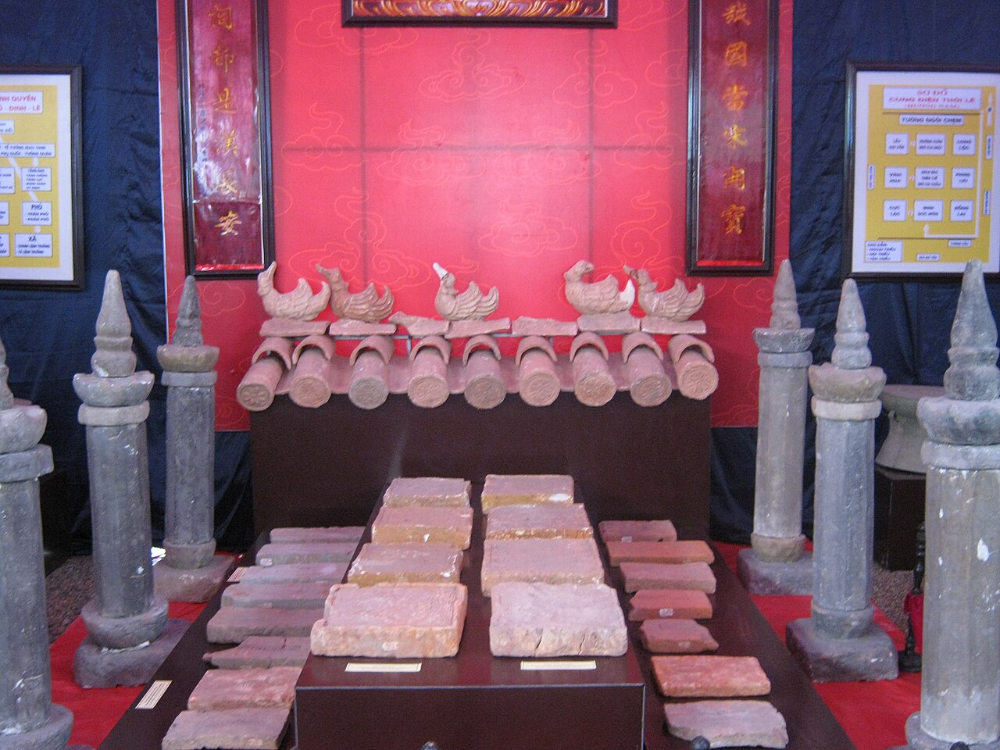

黎大韓王寺廟
-
黎大興王寺是寧平省和魯古都特別國家古蹟中的歷史文化遺跡。黎大興王、杜翁王太后、黎隆定的廟宇，以及黎氏發恩公主和范古隆將軍的供奉。該廟距離丁天黃王廟約300公尺，位於古都和祿東城，現為長延古村。
寧平西和魯區。[3]
-
黎王寺比定王寺小，寺廟空間相當近且非常棒。
建築
-
寺廟採用外國內部風格建造，但規模比定王寺小。寺廟前方是位於索溪河畔的和魯古都中央廣場，寺廟後方是護城河，護城河沿著戴山腳下。
-
穿過外門（外門），沿著鋪著瓷磚的主路，左側是一座高約3公尺、形狀如跳舞鳳凰的大山，鳥喙轉向寺廟，兩翼彷彿在飛翔。右側是天白宅邸，正面則有一座名為「虎普」的山島，由一棵大樹幹的香蕉樹樁組成，擁有九座山脈，壽命超過300年。天白家左側有一座「跪象」形狀的山，上面刻有兩個漢字「不動」。
-
寺廟有三棟建築：外層建築為白陽，中間建築則是供奉范古良的香爐，他對黎大興王有功德。在黎煥主宮中央，黎浩面向前方坐著，右側是面向北方的黎隆定，左側是面向南方的楊文娥王后，面向定王廟。根據民間說法，雖然她被邀請成為黎大韓王的妻子，但她仍選擇了前夫定天黃王。主宮左側的房間供奉黎氏帕昂公主，她是黎王與楊文娥的女兒，也是後世黎王祖先黎泰托的妻子。黎氏帕恩王后於1000年生下了李泰堂王。李朝遷都至通隆後，她經常前往端寧塔拜訪父親黎大韓王的陵墓，並與許多夫妻合作，成為命中注定的眷屬。
-
黎大韓王寺廟的獨特之處在於17世紀的木雕藝術已達到高超且精緻的境界。傳說母親夢見蓮花，並在蓮花池旁移植時生下了樂煥。她將樂煥孵化在竹叢中，並深受綠森林虎的珍愛。在母親的懇求下，虎崽離開了。後來，當他長大後，Le
Hoan 建立了偉大的業力：著名的《Breaking Song， Binh Chiem》。因此，這裡工匠的越南民間木雕藝術也與讚美樂和的主題傳說相符。
-
碧洞寶塔：距離潭谷碼頭2公里，被稱為「南天德第二洞」。這是一座獨特的三層古塔，建於山上，包含夏寶塔、中塔和通寶塔。


